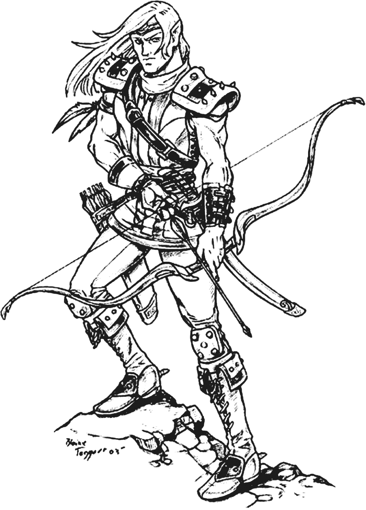
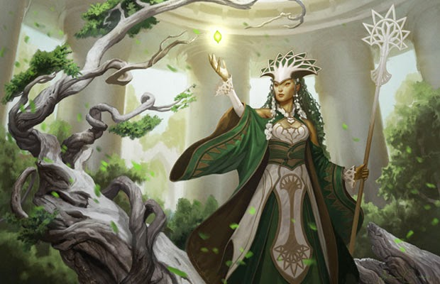

РАСИ
Відвідуючи одне з найбільших міст серед світів DnD: Глибоководдя, Вільне Місто Сірого Яструба, або навіть надприродний Сигіл, Місто Дверей, не можливо не наповнитись емоціями. Звучать розмови на незліченній кількості мов. Запахи приготованої їжі на дюжинах різних кухонь змішуються із запахами переповнених вулиць та поганої санітарії. Будівлі, які належать до низки архітектурних стилів, відображають різноманітне походження своїх жителів.
А самі жителі — істоти різного розміру, форми і кольору, в одязі безлічі стилів та фасонів — представники надзвичайно не схожих між собою рас: від мініатюрних напівросликів і міцних двергів, до величних та струнких ельфів, які живуть серед людей безлічі етнічних груп.
Тут мешкають і більш екзотичні раси, розсіяні серед більш поширених: масивний драконороджений, який проштовхується через натовп, і спритний тифлінґ, який ховається в тіні з лихою іскрою в очах. Тим часом, група гномів голосно регоче, доки один з них запускає хитромудру дерев'яну іграшку, яка рухається сама по собі. Напів-ельфи та напів-орки живуть і працюють поруч з людьми, хоч і повною мірою не належать до жодної з народностей своїх батьків. Тут же ховається від сонця самотній дроу, утікач з підземних просторів Підзем'я, який намагається вижити в світі, де від таких як він тримають осторонь.
НАПІВ-ЕЛЬФ
Флінт мружився, вдивляючись проти заходу сонця. Йому здалось, що зі схилу до нього хтось спускався. Піднявшись, Флінт ступив у тінь високої сосни, щоб світло не так било в очі. Хода людини була пружною і легкою — як у ельфів, подумав Флінт, — але тіло виглядало м'язистим і міцним, — риса не надто ельфійська. Зелений каптур заважав розгледіти обличчя. Флінт бачив тільки засмаглі щоки і рудувато-русяву бороду, які у ельфів не ростуть ніколи. Біля стегна у особи висів меч, а на плечі — довгий лук. На чоловікові був одяг із м'якої шкіри з тисненими візерунком. Візерунок був ельфійським. Але борода? Стривайте-но ...
— Таніс? — гукнув Флінт невпевнено.
— А хто ж іще! — Бородата фізіономія розпливлася в широченній посмішці. Таніс обійняв дверга, відірвавши його від землі. Флінт відповів обіймами на обійми, але одразу ж згадав про свою гідність і вивільнився з рук напів-ельфа
— Маргарет Уейс і Трейсі Хікмен, Дракони осінніх сутінків
Загальна інформація
Вони блукають обома світами, але в дійсності, не належать жодному з них. Напів-ельфи поєднують в собі, як дехто каже, кращі якості обох рас: людську допитливість, винахідливість і амбіції, приправлені вишуканими почуттями, любов'ю до природи і відчуттям прекрасного, які властиві ельфам. Деякі напів-ельфи живуть серед людей, відгороджені емоційними і фізичними відмінностями, спостерігаючи 31 за старінням друзів і коханих, а самі лише злегка зворушені часом. Інші живуть з ельфами у непідвладних століттям ельфійських королівствах. Вони стрімко ростуть, і досягають зрілості, коли їхні однолітки ще залишаються дітьми. Більшість напів-ельфів не здатні ужитися ні в одному суспільстві, тому вибирають життя самотніх мандрівників або об'єднуються з іншими вигнанцями і невдахами, щоб розпочати пригодницьке життя.
Більшість напів-ельфів ще в ранньому віці вчаться долати ворожість і знаходити з усіма спільну мову. Як раса, вони володіють ельфійською грацією без ельфійської відчуженості, і людською енергійністю без людської брутальності. З них часто виходять неперевершені посли і посередники (за винятком переговорів між людьми і ельфами, так як кожна сторона підозрює напів-ельфа в прихильності іншій).
МІЖ ДВОМА СВІТАМИ
Для людей напів-ельфи виглядають ельфами, а для ельфів вони — люди. Їхній зріст є середнім між людським та ельфійським, і становить від 150 до 180 сантиметрів. Напів-ельфи не такі стрункі, як ельфи, але і не такі широкоплечі як люди. Їхня вага коливається між 45 і 80 кілограмами, а чоловіки лише трохи переганяють жінок в зрості і вазі. У чоловіків напів-ельфів на обличчях росте волосся, а деякі відрощують бороди, щоб приховати своє ельфійське походження. Колір волосся і шкіри у них — щось середнє між їхніми людськими і ельфійськими батьками, таким чином різноманітність навіть вища, ніж у батьківських рас. Колір очей вони зазвичай успадковують від ельфійських батьків.
ДИПЛОМАТИ АБО МАНДРІВНИКИ
Напів-ельфи не мають власних держав, але їх радо приймають в людських містах, і трохи менш радо в ельфійських лісах. У великих містах та в регіонах, де люди і ельфи живуть поруч, чисельність напів-ельфів іноді зростає настільки, що вони організовують свої власні маленькі комуни. Вони раді компанії інших напів-ельфів, єдиних істот, які по-справжньому розуміють, як це, жити поміж двох світів.
Втім, в решті світу напів-ельфи настільки рідкісні, що можуть роками не натрапляти на своїх. Деякі напів-ельфи намагаються взагалі уникати компанії, і живуть на природі як мисливці, лісники або шукачі пригод, лише зрідка відвідуючи цивілізовані місця. Як і ельфи, завдяки своєму довголіттю вони тягнуться до зміни місць і ніде не залишаються надовго. Проте є й такі, що впадають в гущу соціального життя, використовуючи свою харизму і соціальні навички у сфері дипломатії або шахрайства.
ІМЕНА НАПІВ-ЕЛЬФІВ
Напів-ельфи використовують як людські, так і ельфійські імена. Наголошуючи, що вони насправді не належать жодному з цих прошарків, напів-ельфи, які виросли серед людей, беруть ельфійські імена, а ті, хто виріс серед ельфів, навпаки часто приймають людські.
РАСОВІ ОСОБЛИВОСТІ НАПІВ-ЕЛЬФІВ
Твій напів-ельф володіє певними якостями, схожими на ельфійські, та деякими особливостями, властивими лише напів-ельфам.
Підвищення характеристик. Показник твоєї Харизми збільшується на 2, а показники двох інших характеристик на твій вибір збільшуються на 1.
Вік. Напів-ельфи дорослішають з тією ж швидкістю, що і люди, і досягають зрілості до 20 років. Проте вони живуть набагато довше від людей, часто доживаючи понад 180 років.
Світогляд. Напів-ельфи успадкували схильність до хаосу від своїх ельфійських предків. Вони в однаковій мірі цінують особисту свободу і творче самовираження, не проявляючи ні тяги до лідерства, ні бажання слідувати за вождем. Їх дратують правила та чужі вимоги, й іноді вони бувають ненадійними і непередбачуваними.
Розмір. Напів-ельфи майже такого ж розміру, як і люди. Їхній зріст коливається від 150 до 180 сантиметрів. Твій розмір — Середній.
Швидкість. Твоя базова швидкість ходьби становить 6 метрів.
Темний зір. Завдяки твоїй ельфійській крові, ти володієш чудовим зором в темряві і при тьмяному світлі. На відстані 12 метрів при тьмяному світлі ти бачиш так, ніби це яскраве світло, а у темряві так, ніби це тьмяне світло. У темряві ти не розрізняєш кольори і бачиш все у відтінках сірого.
Фейська спадщина. Ти робиш з перевагою кидки рятунку проти причарування, і тебе неможливо приспати за допомогою магії.
Універсальність навичок. Ти отримуєш володіння двома навичками на твій вибір.
Мови. Ти можеш говорити, читати і писати на загальній, ельфійській та ще одній мові на твій вибір.
НАПІВ-ДРІАД
wikiЗагальна інформація
Напів-дріади більше схожі на расу свого батька, ніж на расу матері. За більшістю стандартів вони виглядають як звичайні діти. Але фейська спадщина напів-дріади завжди проявляється в одній очевидній деталі - їхньому волоссі. Волосся напів-дріади змінюється залежно від пори року: навесні та влітку воно має змішані відтінки зеленого, а восени та взимку - різноманітні поєднання світлого, каштанового та рудого кольорів. Листя і квіти з материнського дерева іноді проростають у волоссі напів-дріади, у деяких вони змішуються з пасмами волосся, у інших розростаються і стають листям, їхнє волосся нагадує масу зелених виноградних лоз.
ІСТОРІЯ
Напів-дріади та дріади є захисниками лісу і захищатимуть його від будь-кого, хто намагатиметься пошкодити чи осквернити ліс.
СУСПІЛЬСТВО
Напів-дріади зазвичай живуть на узбіччі суспільства, їхній зв'язок з фейською спадщиною матері робить їх більш комфортними в місцях, де все росте, міста ж відчувають себе гнітючими і неприродними. Коли напівдріада має дім у міських стінах, їхнє місцеперебування стає очевидним за буйством листя, яке вони вирощують. Багато напівдріад живуть у материнських гаях, деякі знаходять своє покликання у роботі з рослинами і стають фермерами або садівниками.
ІМЕНА НАПІВ-ДРІАД
Напів-дріади зазвичай беруть імена від раси свого батька, а якщо ні, то їхні матері, як правило, придумують щось епатажне, що вони колись чули, або що було популярним у їхній молодості, багато століть тому.
РАСОВІ ОСОБЛИВОСТІ НАПІВ-ДРІАД
Діти лісових фей.
Підвищення характеристик . Ваш показник інтелекту збільшується на 1, а показник мудрості - на 2.
Вік . Напів-дріади досягають зрілості у 25 років, після чого їх старіння сповільнюється до повзучості. Напівдріада може жити до 500 років.
Світогляд . Напів-дріади схильні ставити "закони" природи вище за закони людини і віддають перевагу справжньому нейтралітету.
Розмір . Зріст напів-дріади становить близько 5 футів плюс-мінус півфута, а вага - від 90 до 230 фунтів. Твій розмір - середній.
Швидкість . Ваша базова швидкість ходьби - 30 футів.
Темнозір . Ви можете бачити в тьмяному світлі в межах 60 футів від себе так, ніби це яскраве світло, а в темряві - так, ніби це тьмяне світло. У темряві ви не можете розрізнити кольори, лише відтінки сірого.
Маска дикої природи. Ви можете спробувати сховатися навіть тоді, коли вас лише злегка затуляє листя, злива, сніг, туман та інші природні явища.
Магія природи. Ви володієте обмеженими знаннями про дикі землі, до яких маєте відношення. Ви знаєте кантріп "Терновий батіг" і можете застосовувати його без матеріальних компонентів. Коли ви досягнете 3-го рівня, ви зможете застосувати заклинання зцілення ран лише один раз, після чого вам знадобиться тривалий відпочинок, перш ніж ви зможете застосувати його знову. Коли ви досягнете 5-го рівня, ви також зможете один раз застосувати заклинання "Знайти тварин або рослини", після чого вам знадобиться тривалий відпочинок, перш ніж ви зможете застосувати його знову. Мудрість - це ваша здатність для цих заклинань.
Розмовляйте з тваринами та рослинами. Ви можете передавати прості повідомлення тваринам і рослинам, а також розуміти прості поняття і почуття, які вони передають вам у відповідь. Ці відповіді неймовірно обмежені інтелектом тварини чи рослини і тим, що вона може сприйняти.
Фейська спадщина (Fey Ancestry). Ти робиш з перевагою кидки рятунку проти причарування, і тебе неможливо приспати за допомогою магії.
Природознавство (Natural History). Ви отримуєте навик "Природознавство" (Nature skill).
Мови. Ви можете розмовляти, читати і писати загальною та сильванською мовами.